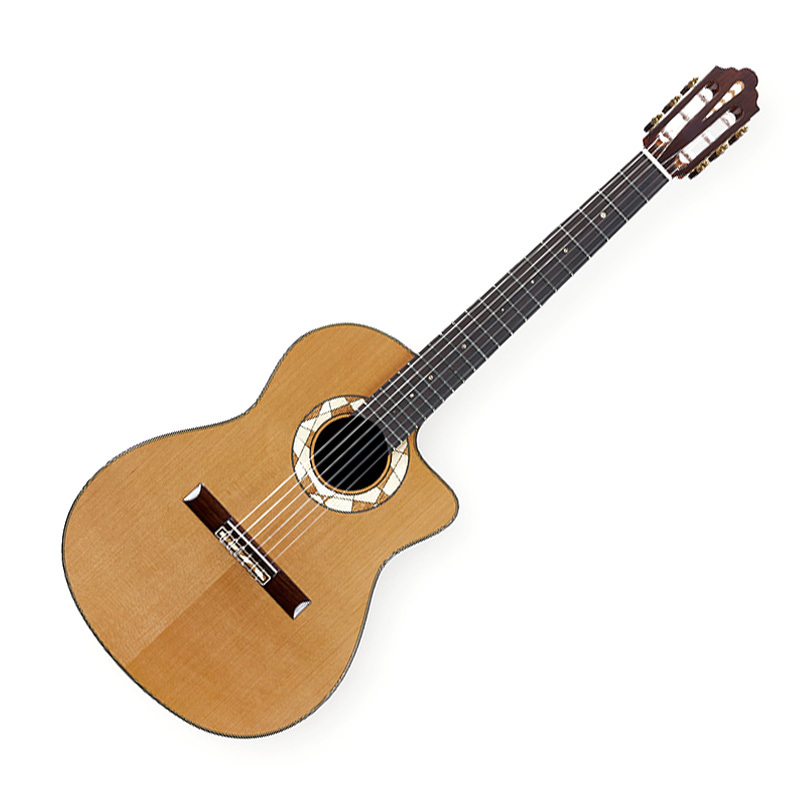
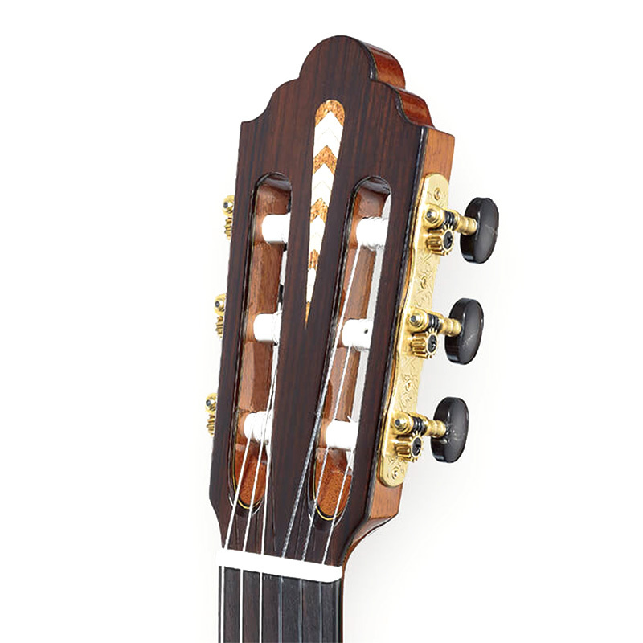
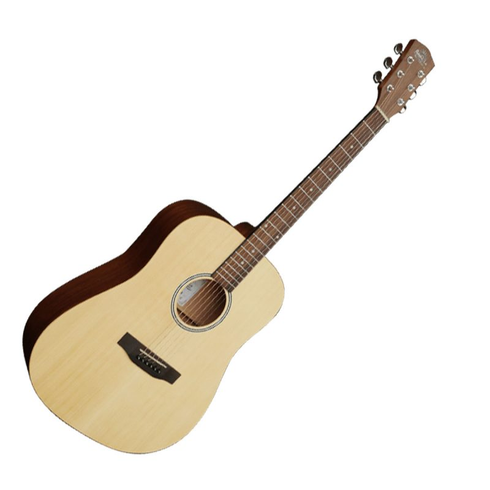
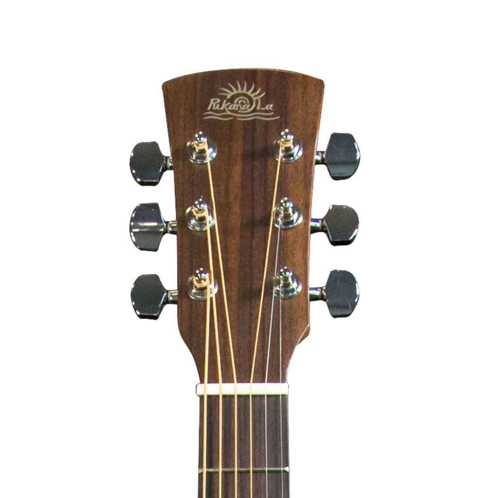
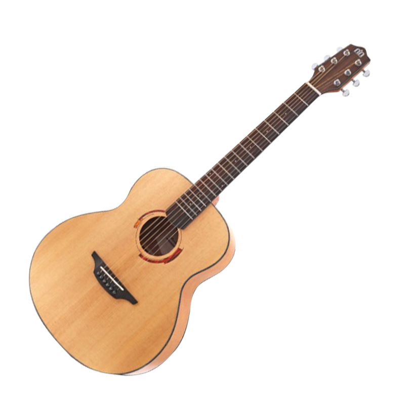
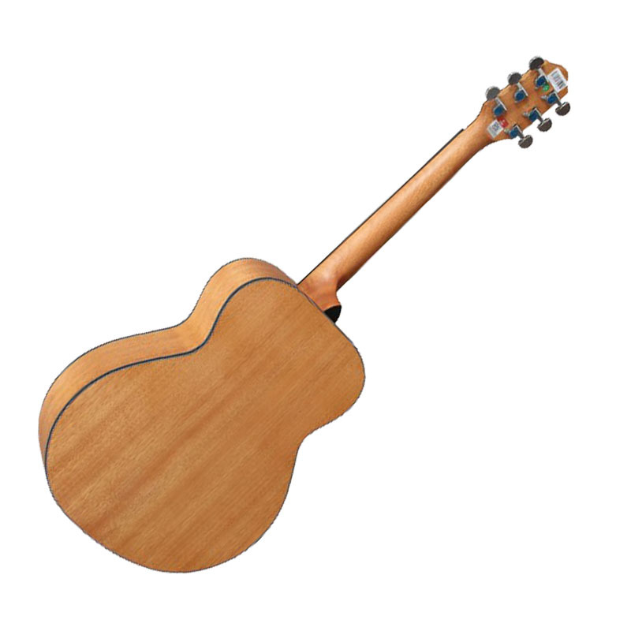
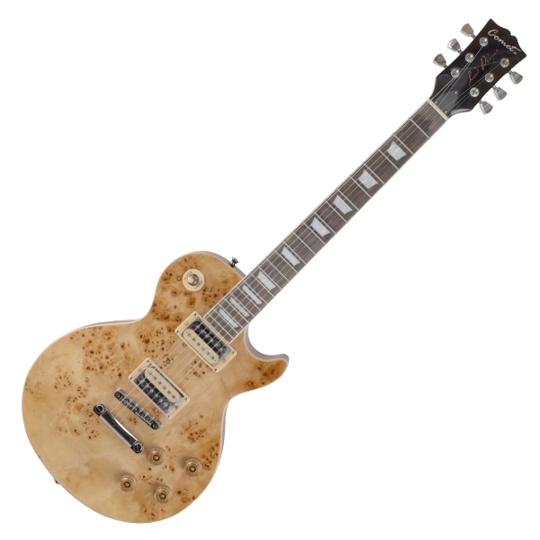
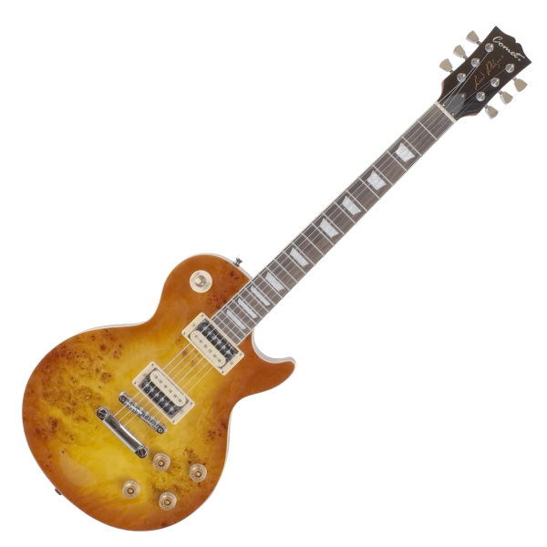
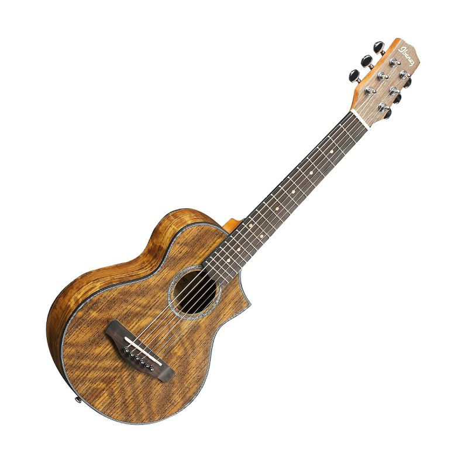
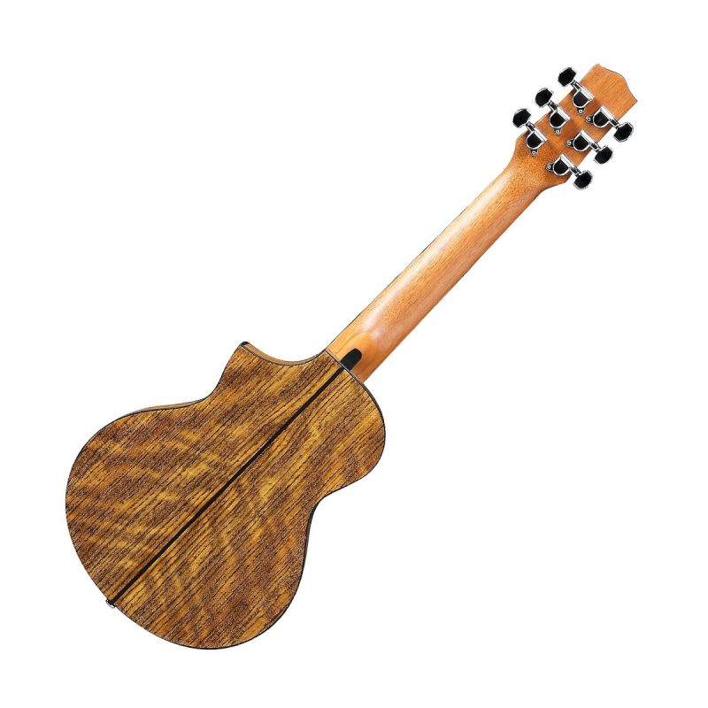

回首頁

1.古典吉他
古典吉他又稱作西班牙吉他，屬於器樂，是吉他琴族中的其中一支成員。
以音箱的共振放大聲音，而非使用電聲。
一般有6根琴弦，有些特製的吉他則有8~10根琴弦增加其低音音域，並有專門曲目供其演奏。
琴弦以往由羊腸製成，1946年後由美國奧古斯汀 (Albert Augustine)發展出來的尼龍絃所取代。
尼龍弦的張力較小，彈奏的音色也與鋼弦吉他不同。
由於尼龍弦的張力較低，琴頸部分完全木製，不須以鋼製的桁架維持弧度。
古典吉他的琴頸較為寬闊，可在其上施用複雜的運指技巧，然而持琴的穩定也因此降低，較鋼弦吉他更為注重彈奏姿勢。
古典吉他於演奏時通常不外加擴音裝置，而在嘈雜的環境中亦可以電子收音器增加音量，
通常在琴橋下裝置壓電收音器，或在琴身前懸掛麥克風。
|  |  |
2.民謠吉他
民謠吉他是西班牙吉他演變過程中的一大重要分支，
隨著Blues，Ragtime，鄉村音樂，Bluegrass，都市民謠與流行音樂，以及搖滾樂，等許多美國音樂風格快速的發展和成熟，
以及在全世界範圍的流行，民謠吉他不僅在結構設計和製作工藝等方面取得了長足的發展，
在社會持有量和流行程度等方面均佔據著聲學吉他領域的絕對的統治地位。
目前民謠吉他約佔所有類型吉他中的70%，屬於近一個世紀來說最主流的吉他樂器。
使用金屬琴弦、琴頸較窄。
|  |  |
3.旅行吉他
較相似於民謠吉他，但共鳴箱較小、尺寸較小，方便攜帶，近幾年流行用於演奏場子。
使用金屬琴弦、琴距較窄。
|  |  |
4.電吉他
電吉他是一種廣泛運用於多種音樂風格中的電聲撥弦樂器。
電吉他透過電磁學原理發聲，它透過拾音器將琴弦上的機械振動轉化為電訊號。
這些電訊號經過放大與處理後，透過音箱轉換成聲音訊號而發聲。
由於電吉他產生的電訊號可以經過各種效果器的處理，故電吉他的音色非常豐富。
這個特點使它被廣泛運用在多種不同的音樂風格中，例如鄉村、藍調、爵士、搖滾與金屬等等。
電吉他的琴身上裝有拾音器，拾音器中有線圈和磁體。
當電吉他的琴弦振動時，受到拾音器中磁體磁化的金屬琴弦產生的磁場會隨著琴弦的振動而振動，
從而與拾音器中的線圈發生電磁感應，而使得線圈中產生電訊號。
並且透過吉他音箱轉換成聲音訊號而發聲，發聲完全依賴於琴弦帶動共鳴箱產生的振動而發聲。
|  |  |
5.烏克麗麗
烏克麗麗是一種夏威夷的撥弦樂器，歸屬在魯特琴樂器一族，通常有四條弦。
夏威夷人初次接觸這種樂器的時候，不但認同這種琴音音色的優美，
還對演奏者手指在指板上的快速移動感到驚訝；
從那時開始，夏威夷人就把這種琴稱為Ukulele意思是「跳躍的跳蚤」。
烏克麗麗基本上包括三種較為流行尺寸，21吋的高音、23吋的中音、及26吋的次中音。
依照尺寸的不同，所呈現的音質、外觀、及彈奏的感覺也都不一樣，基本上是依照個人的喜好及用途來挑選適用的尺寸。
在彈奏和弦上也可非常快上手，不僅邊彈邊唱樂趣無窮，它的聲音有種天生的快樂氛圍，
依照不同的彈奏法，時而明亮時而溫暖，因此不少人認為這是非常具有療癒效果的樂器，
在彈奏上可讓人抒發情緒，在聽覺上可讓人覺得溫暖開心。
|  |  |